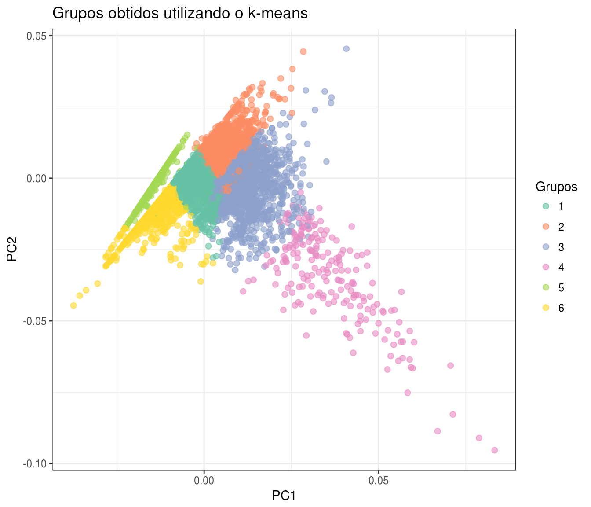

Classificação dos licitantes de merenda
Atualizado em 30/06/2017
Considerando a forma como a Administração Pública gasta o dinheiro, o objetivo desse relatório é identificar dentre as empresas/pessoas físicas, que fornecem merenda ou que participaram de licitações que envolviam merenda, quais grupos de empresas tem comportamento parecido considerando algumas variáveis. Para isso utilizaremos uma técnica de agrupamento conhecida como k-means.
O que você precisa saber para ler esse relatório é de que ao lançar uma licitação, dependendo de sua modalidade, as empresas podem apresentar propostas que serão avaliadas pela Administração Pública, conforme critérios estabelecidos no Edital da licitação. Então, as empresas vencedoras irão participar do processo de execução orçamentária do município. Nesse processo, o dinheiro destinado a empresa será empenhado, e a medida que a empresa vai executando corretamente o fornecimento do que foi acordado esse dinheiro é liquidado e pago. Mais sobre esse processo pode ser lido aqui.
Licitantes
Nesse relatório estamos interessados em agrupar sob duas perspectivas. Na primeira delas, o conjunto de empresas/pessoas físicas que participaram de uma licitação que envolvia pelo menos um item de merenda. O critério estabelecido para determinar se existe um item de merenda é se pelo menos um empenho, que está associado a essa licitação, é destinado a Alimentação Escolar.
Descrição das variáveis
Foram analisados 64616 licitantes que participaram de uma licitação que gerou pelo menos um item de merenda. É importante dizer que não há garantia que o licitante tenha participado exclusivamente do item da licitação destinado a merenda, no entanto a sua participação é contada a partir do momento em que o mesmo fez alguma proposta a uma licitação que envolvia item de tal natureza.
Os critérios considerados para a realização do agrupamento foram:
Número de participações (participou): Número de licitações nas quais o licitante fez proposta.
Municípios: Número de municípios distintos onde o licitante fez pelo menos uma proposta.
Proporção de vitórias (Ganhou): Razão entre o número de participações em licitações e o número de vitórias (número de licitações relacionadas aos empenhos do licitante com a Administração Pública).
Valor total empenhado: Soma do valor em reais de todos os empenhos relacionados ao licitante.
Valor mediano empenhado: Mediana do valor em reais dos empenhos relacionados ao licitante.
Valor total pago: Soma do valor em reais efetivamente pago ao licitante mediante transferência bancária.
Foram aplicadas técnicas de transformação e padronização nos dados a fim de obter os melhores resultados e visualizações possíveis.
Para nos auxiliar na escolha do número de grupos nos quais classificaremos os licitantes de merenda, usaremos uma visualização que nos mostra a soma do quadrado das distâncias dentro dos grupos em função do número de grupos. O desejado é a menor distância possível, pois indica que temos grupos bastante coesos, com um número de grupos que sejamos capazer de diferenciar e interpretar.  A visualização indica que com 6 grupos obtemos um melhor agrupamento já que com mais grupos que isto não temos grandes impactos na qualidade dos grupos. Em função disso optamos por classificar licitantes de merenda nesses grupos.
A visualização indica que com 6 grupos obtemos um melhor agrupamento já que com mais grupos que isto não temos grandes impactos na qualidade dos grupos. Em função disso optamos por classificar licitantes de merenda nesses grupos.
A distribuição dos licitantes em cada grupo pode ser vista no gráfico de dispersão abaixo que é dado em função das variáveis PC1 e PC2 que são aproximações para as variáveis usadas no agrupamento. Basicamente seus valores exatos para cada ponto não nos interessam, mas a visão geral dos licitantantes e seus grupos sim.
A seguir observamos os 6 grupos gerados, cada um com um boxplot para cada variável usada no agrupamento.  Com isso podemos observar o comportamento de cada grupo e estudá-los em função das suas particularidades, como segue:
Grupo 1 - Saudáveis
Neste grupo estão os licitantes que tem comportamento regular, suas taxas estão todas na média. Indicando que os fornecedores deste grupo são mais cautelosos ao participar de uma licitação.
Grupo 2 - Gourmet
Quem faz parte desse grupo participa muito em muitos municípios dando a ideia de que estão sempre experimentando novas formas de participar. Estes quando ganham, ganham bem pois tem o valor empenhado, pago e a mediana do que foi empenhado considarávelmente acima da média.
Grupo 3 - Nutricionistas
Esse pessoal sabe muito bem onde e o que comer. Participam pouco e em poucos municípíos mas mesmo assim ganham mais e melhor que os demais.
Grupo 4 - Bom-de-garfo
Quem está aqui é porque tem todas as taxas altas. Entra em várias licitações em muitos municípios e lucram bem com isso.
Grupo 5 - Magro-de-ruim
Comem, comem, comem mas não engordam. Mesmo participando mais que a maioria, em geral não conseguem ganhar as licitações.
Grupo 6 - Estudantes de Nutrição
Esses estão aprendendo com os nutricionistas ainda. Participam pouco e em poucos municipios diferentes mas ganham bem com isso, um pouco pior que os verdadeiros nutricionistas mas ainda sim tem seus lucros.
Ganhadores
Na segunda perspectiva para o agrupamento, o interesse está em utilizar apenas quem possui empenhos de alimentação escolar associados. Ou seja, apenas os ganhadores dos itens das licitações que envolveram merenda. Sob essa perspectiva é possível afirmar com segurança de que os fornecedores aqui agrupados participaram efetivamente dos itens da licitação relacionados a merenda escolar.
Descrição das variáveis
Foram analisados 9478 empresas/pessoas físicas que ganharam licitações e possuem empenhos associados a alimentação escolar.
Os critérios considerados para a realização do agrupamento foram:
Número de empenhos (ganhou): Número de empenhos associados ao fornecedor relativos a alimentação e educação.
Municípios: Número de municípios distintos onde o fornecedor tem empenhos associados.
Valor total empenhado: Soma do valor em reais de todos os empenhos relacionados ao fornecedor.
Valor mediano empenhado: Mediana do valor em reais dos empenhos relacionados ao fornecedor.
Valor total pago: Soma do valor em reais efetivamente pago ao fornecedor mediante transferência bancária.
Como o interesse é agrupar os fornecedores ganhadores de merenda, não foi considerada a participação desses fornecedores em outras licitações nas quais não ganharam.
Foram aplicadas técnicas de transformação e padronização nos dados a fim de obter os melhores resultados e visualizações possíveis.
Acima podemos observar uma métrica que pode ser utlizada para determinar o número de grupos escolhidos para a divisão dos fornecedores. A escolha ideal do número de grupos estaria entre 5 e 10.
Considerando que quanto mais grupos maior será a dificuldade para interpretar como cada grupo consegue condensar o perfil de seus integrantes, a partir da visualização abaixo e da silhueta mais adiante, determinamos que o número de grupos como igual a 6.
É possível observar a distribuição dos fornecedores considerando as 5 variáveis citadas acima condensadas em apenas duas utilizando uma técnica conhecida como PCA.
Abaixo, está disponível o gráfico de silhueta desse agrupamento. Esse gráfico tem o objetivo de descrever quão parecidos são os componentes dentro de um grupo. O ideal é que todos os grupos tenham um valor de silhueta elevado, no entanto observa-se que alguns ganhadores estão em grupos mas caraterísticas diferentes do grupo. Uma das explicações para isso, seria o fato que esses ganhadores não se encaixam muito bem em nenhum dos grupos propostos.
Outro fator importante que pode ser observado através desta visualização é o número de observações de cada grupo. Percebe-se a de um grupo maior (1) com 3719 ganhadores, já o menor grupo (4) tem 205.

A seguir é apresentado o boxplot de cada variável por grupo com o objetivo de identificar as características de cada conjunto de ganhadores.

Os grupos podem ser rotulados e descritos como:
Grupo 1 - Cuscuz
Esse grupo de fornecedores possui variáveis com todas características próximas a média (um pouco abaixo) e então podem ser considerados básicos uma vez que nenhuma de suas variáveis se sobressai, além de ser o maior grupo observado.
Grupo 2 - Arroz com feijão
Os fornecedores desse grupo, assim como no anterior possuem variáveis próximas ao que é observado na maioria dos fornecedores. No entanto, possuem valor total e mediano empenhado e o valor total pago acima do que é observado no grupo 1 e portanto, em geral, ganham mais.
Grupo 3 - Baião de dois
Os integrantes do grupo possuem variáveis acima do que é observado na maioria dos fornecedores de merenda. Apresentam, por exemplo, um valor maior no total empenhado do que na mediana do que é empenhado com relação a outros grupos, o que indica que participa de empenhos com valores menores, mas que o montante é acima da média já que ganhou mais empenhos que a maioria dos fornecedores.
Grupo 4 - Feijoada
Esse grupo de fornecedores experimenta de tudo, ou seja, possuem vários empenhos ganhos, e em diferentes lugares. Em geral, também possuem valores totais empenhados e pagos maiores que a maioria.
Grupo 5 - Pastel de vento
Nesse grupo apesar do valor total do empenho estar próximo a maioria do que é encontrado nos fornecedores de merenda, o valor total pago está bem abaixo. O nome do grupo está atrelado ao fato que se ganha menos (pago) do que se espera ganhar (empenho).
Grupo 6 - Arroz com ovo
Os participantes desse grupo possuem variáveis atreladas ao dinheiro com valores mais abaixo do que a maioria dos fornecedores de merenda.